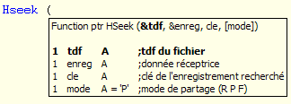

L'option Information sur les paramètres ouvre une fenêtre avec le prototype de la procédure / fonction et la liste des paramètres requis (nom, type et commentaires). Pour plus d'informations sur l'affichage des commentaires, consultez la rubrique Insertion de commentaires dans le code).
Nota : Le paramètre suivant à taper pour la fonction vous est indiqué en caractères gras.

Remarques :
Vous devez impérativement employer la syntaxe MaFonction (Param1, Param2, Param3).
La syntaxe "Microbol" MaFonction Param1 Param2 Param3 (sans parenthèses ni virgules) n’est pas reconnue.
Le compilateur Diva accepte dorénavant l’écriture MaFonction () lorsque MaFonction n’a pas de paramètre.
Dans le prototype, les paramètres facultatifs apparaissent entre crochets -"[ ]"-.
Utiliser l'option Information sur les paramètres
Appel automatique :
Tapez une parenthèse ouvrante -"("- derrière un nom de procédure ou de fonction (comme vous le feriez normalement pour démarrer la saisie de la liste de paramètres).
Tapez une virgule -","- (caractère séparateur entre deux paramètres) à l'intérieur de la zone de saisie des paramètres (entre la parenthèse ouvrante et la parenthèse fermante).
Appel manuel :
A l'intérieur de la zone de saisie des paramètres (entre la parenthèse ouvrante et la parenthèse fermante), appuyez sur Maj+Ctrl+Espace.
Cette fonction est également accessible depuis le menu Edition : Saisie assistée ou depuis le sous-menu Saisie assistée du menu contextuel ouvert par un clic droit dans la zone d'édition de texte (choix Informations sur les paramètres).
La liste des paramètres affiche aussi les informations sur les paramètres pour les fonctions imbriquées. Si vous tapez une fonction comme paramètre d'une autre fonction, la liste affiche dans un premier temps les paramètres de la fonction interne. Dans un second temps, la liste affiche les paramètres de la fonction externe.
Fermer la fenêtre d'informations sur les paramètres
A tout moment, appuyez sur Echap. La saisie d'une parenthèse fermante -")"- a également pour effet de fermer la liste des paramètres. La fenêtre est aussi refermée automatiquement si vous quittez la zone d'édition de la fonction.
Désactiver l'option Information sur les paramètres
Décochez la case "Afficher les informations sur les paramètres" dans les options de l'éditeur de texte (volet Saisie assistée). Pour plus d'informations, consultez la rubrique Modification des options et désactivation des fonctions d'assistance au codage.
Pour afficher la fenêtre des paramètres